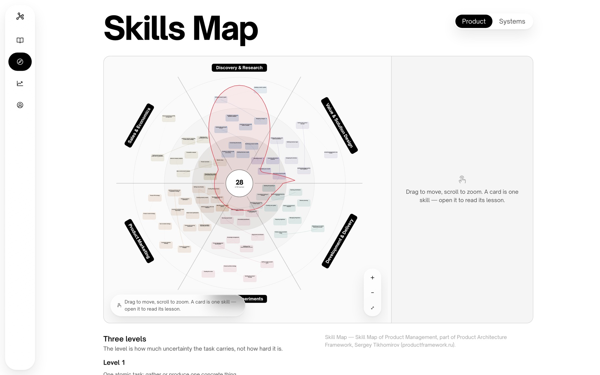

PM Thinking Coach
The map of the profession, turned into a route you can walk from zero

What it is
Most material for new product managers is a library: a pile of articles you are trusted to sequence yourself. That works if you already know what you are missing, which is precisely what a beginner does not.
PM Thinking Coach turns the map of the profession into a route. Two skill trees — product management and system design — hold 167 skills between them. Each is a card you can open and read. Each block of skills ends in a gate: a real situation with incomplete data where you decide and defend the decision in writing.
It runs on iOS in SwiftUI and in the browser, both on one FastAPI and Postgres backend, with the same account and the same corpus.

A gate, not a quiz
This is the decision the whole product rests on. A multiple-choice test measures whether you remember the right answer; the job measures whether you can defend a call with the evidence you actually have. So a gate hands you a company, a constraint and a deadline, lets you choose what evidence to look at, and then asks you to write down why.
Scoring enforces it rather than merely encouraging it. Rationale and communication carry 60 of 100 points against 25 for the decision itself, and the pass mark is 70 — so picking the option a grader would like, even with every piece of evidence reviewed, cannot pass on its own. A content validator rejects any scenario where a defensible alternative scores too low, which keeps a single-right-answer question out of the corpus by construction.
- Every gate has at least two scenarios, each with a different company, so a retake cannot be passed from memory
- Failing costs nothing: no XP is taken, nothing locks, and the result points at the exact lessons that would have helped
- The server owns score, XP and unlock status; the client renders them and never derives them, so a UI bug cannot open a gate early

The lessons
A lesson is one idea, one model, and where that model stops working — three to five minutes on the product map, twelve to fifteen in system design. Every domain follows one fictional company through all of its blocks, so the examples accumulate instead of resetting.
Lessons can carry an audio overview: two hosts talking the lesson through, in the sense NotebookLM made familiar. It is deliberately not the lesson read aloud — prose read out loud always sounds like prose read out loud. The dialogue is written once at build time and stored as a content file, so it can be reviewed and edited like any other, and the runtime never calls a model.
The model that writes it is checked, not trusted: a draft is rejected if it uses a number or a term that does not appear in the lesson, if it collapses into a monologue, or if it quotes the lesson verbatim. Edit the lesson and its overview stops counting as current rather than quietly voicing last week's edition.

What is in it
The corpus is authored, not generated — and it is finished. Both trees are fully published.
- Two skill trees: product management (18 blocks, 71 skills) and system design (18 blocks, 96 skills), each open from day one
- 248 lessons, 36 gates and 87 gate scenarios, every one written and reviewed
- 96 exercises in system design that are formative on purpose: no XP, no effect on what opens next, and the reference reasoning comes back even on an empty submission
- A 489-term glossary, and diagrams stored as structure rather than pictures, so a screen reader gets a description rather than an image
- Eight competencies tracked per learner, one per domain of the map plus communication and system design
- Bilingual: Russian is the authored source, English is an overlay merged over it. The rubric and option weights exist in one copy only, so the language someone reads in cannot change what they score — a property of the construction, not of discipline

Where it stands
Both trees are complete and a full traversal has been verified end to end through the API. The evaluator currently runs a deterministic mock: it exercises the whole flow, but the coaching text reads as a stub and gate calibration against the QA fixtures is not meaningful until a real provider is wired up. That is the next decision, and it is deliberately the last one — nothing about the product depends on which model answers.
- Defined the beta success metrics before launch: activation, time to first value, D7 repeat practice, and whether the feedback was useful